Crea un proyecto STM32 para el STM32F401CC. En RCC activa el cristal (HSE) y en Clock Configuration pon la entrada en 25 MHz, PLL y 84 MHz de HCLK.
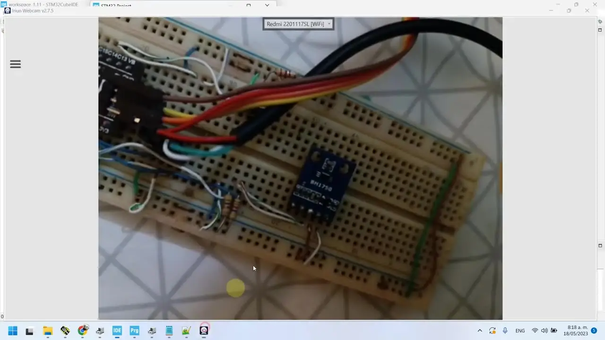
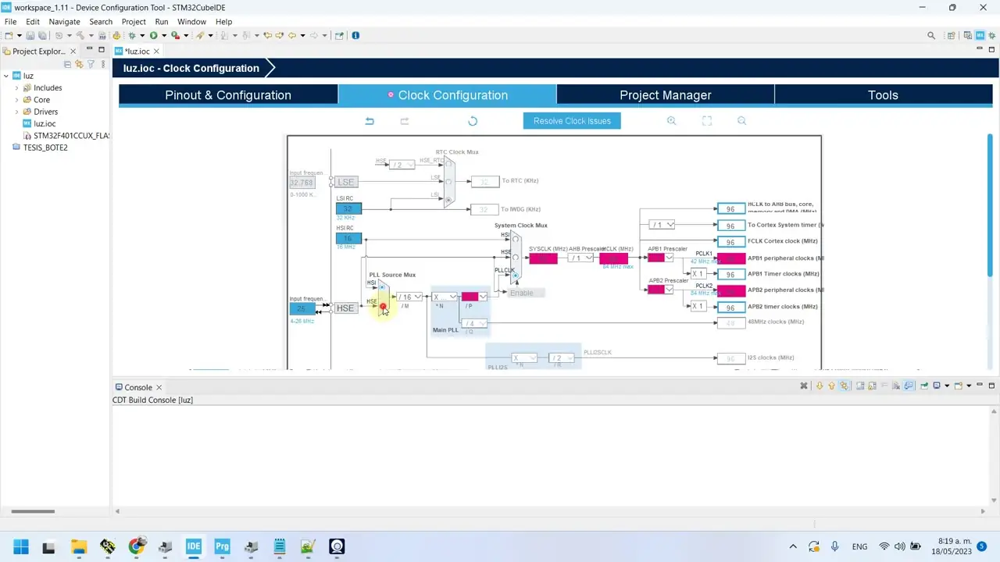
El BH1750 mide intensidad lumínica por I2C. Según el modo, tiene alta resolución (hasta 8191) o baja resolución (hasta 65528). La librería enciende el sensor, le envía el modo, lee 2 bytes y lo apaga. Proteus no lo simula, así que se prueba en una protoboard con la Black Pill y un adaptador USB-serial.
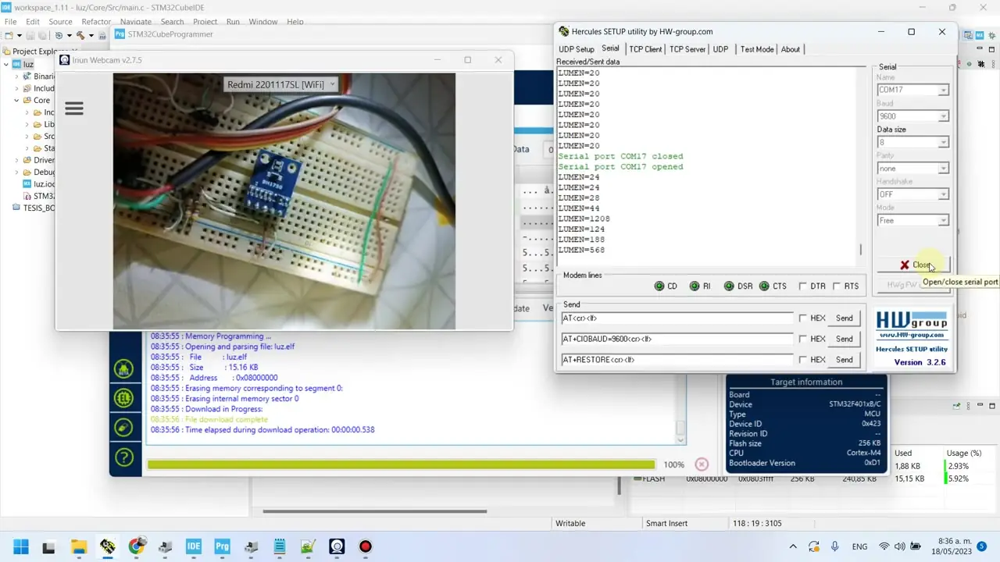
Crea un proyecto STM32 para el STM32F401CC. En RCC activa el cristal (HSE) y en Clock Configuration pon la entrada en 25 MHz, PLL y 84 MHz de HCLK.


Activa I2C1 con la configuración por defecto (100 kHz), USART1 asíncrona a 9600 y PC13 como salida con etiqueta led.
En I2C1 → User Constants → Add IP Handle Label escribe i2c_pin: la librería usa ese nombre, así puedes cambiar a I2C2 sin tocarla.
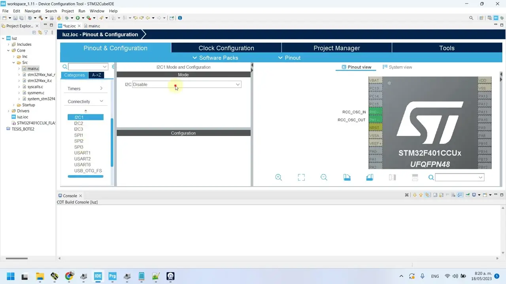
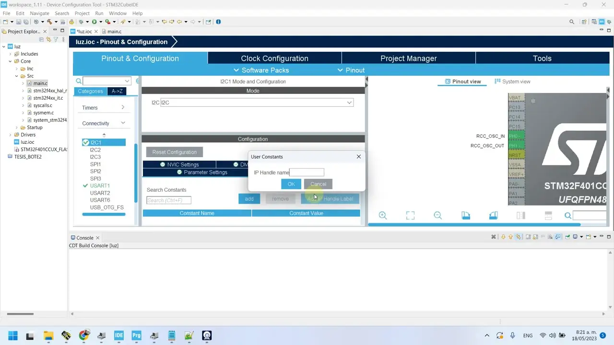
Crea la carpeta Librerias dentro de Core, agrégala al path y copia BH1750, delays y uart.
#include "uart.h"
#include "BH1750.h"
#include "stdio.h"
#include "string.h"
#include "stdint.h"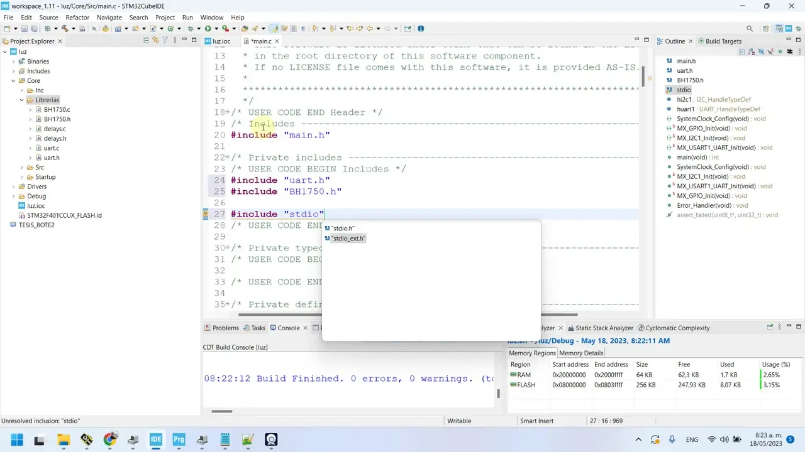
Con el pin ADDR a tierra la dirección de escritura es 0x46. Baja resolución (8 lx) llega hasta 65528; alta resolución (1 lx) hasta 8191.
#define BH1750_address_w 0x46
#define power_down 0x00
#define power_up 0x01
// baja resolución: hasta 65528
#define continua_LO_1 0b00010011 // 0x13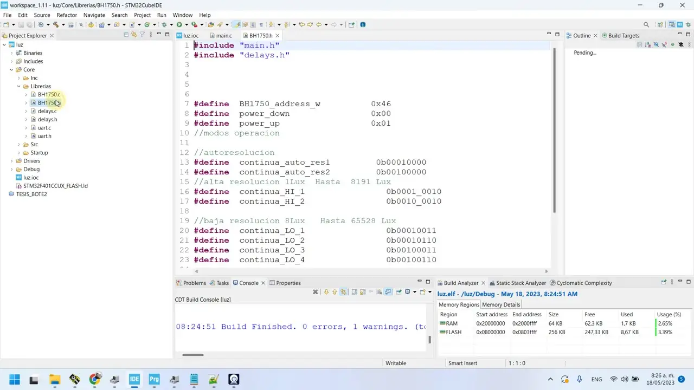
Escribir es enviar un byte a la dirección del sensor. Leer es recibir 2 bytes y unirlos: la parte alta se desplaza 8 bits y se combina con la baja. Ambas con timeout de 300 ms por si el sensor no responde.
#include "BH1750.h"
extern I2C_HandleTypeDef hi2c1;
uint8_t BH1750_dato[2];
void BH1750_init(void)
{
delay_us_dwt_init();
delay_ms(50); // 20 ms mínimo por datasheet
BH1750_write(power_down);
}
void BH1750_write(uint8_t dato)
{
BH1750_dato[0] = dato;
HAL_I2C_Master_Transmit(&i2c_pin, BH1750_address_w, BH1750_dato, 1, 300);
}
uint16_t BH1750_read_data(void)
{
uint16_t luz = 0;
uint8_t BH1750_dato[5];
HAL_I2C_Master_Receive(&i2c_pin, BH1750_address_w, BH1750_dato, 2, 300);
luz = ((uint16_t)BH1750_dato[0] << 8) | BH1750_dato[1];
return luz;
}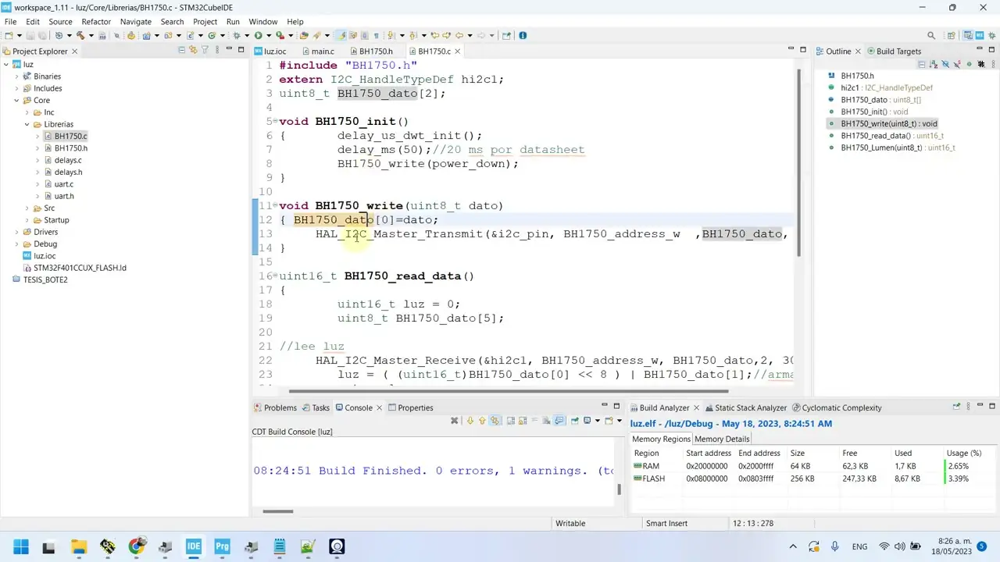
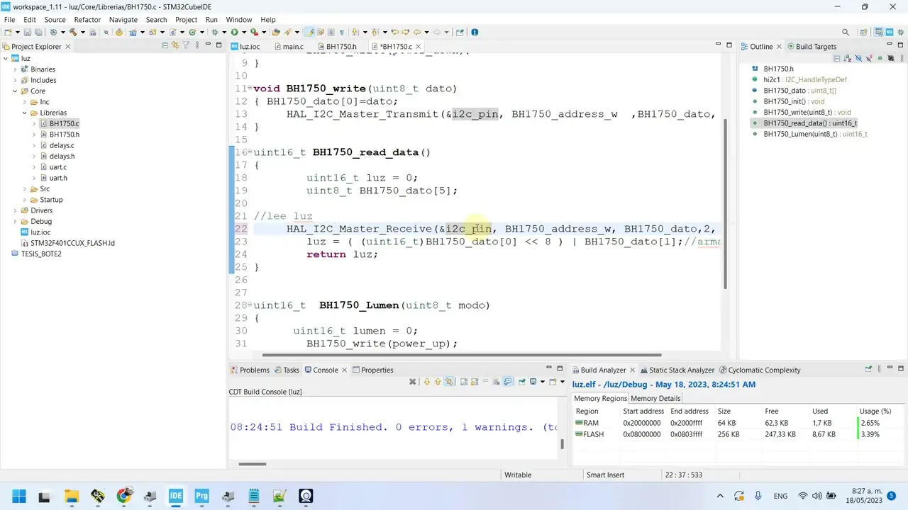
uint16_t BH1750_Lumen(uint8_t modo)
{
uint16_t lumen = 0;
BH1750_write(power_up);
BH1750_write(modo);
lumen = BH1750_read_data();
delay_ms(120); // retardo de lectura por datasheet
BH1750_write(power_down);
return lumen;
}La hoja de datos pide esperar el tiempo de medición (unos 16 ms en baja resolución y 120 ms en alta) después de enviar el modo. Si ves valores atrasados, pon el delay antes de BH1750_read_data(). Para tener lux exactos divide el valor entre 1.2.
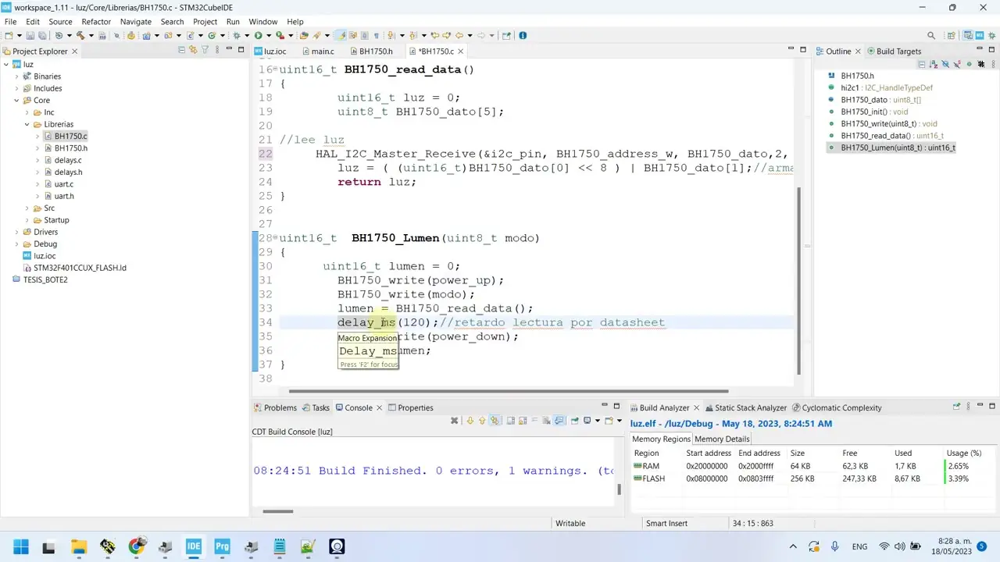
uint16_t luz = 0;
char texto[50];
/* USER CODE BEGIN 2 */
uartx_write_text(&huart1, "INICIANDO\r\n");
BH1750_init();
/* USER CODE END 2 */
while (1)
{
luz = BH1750_Lumen(continua_LO_1);
sprintf(texto, "LUMEN=%u\r\n", luz);
uartx_write_text(&huart1, texto);
HAL_GPIO_TogglePin(led_GPIO_Port, led_Pin);
HAL_Delay(1000);
}En el video al principio no funcionaba: la inicialización quedó fuera de USER CODE BEGIN 2 y CubeMX la borró al regenerar. Todo tu código debe ir entre los comentarios USER CODE.
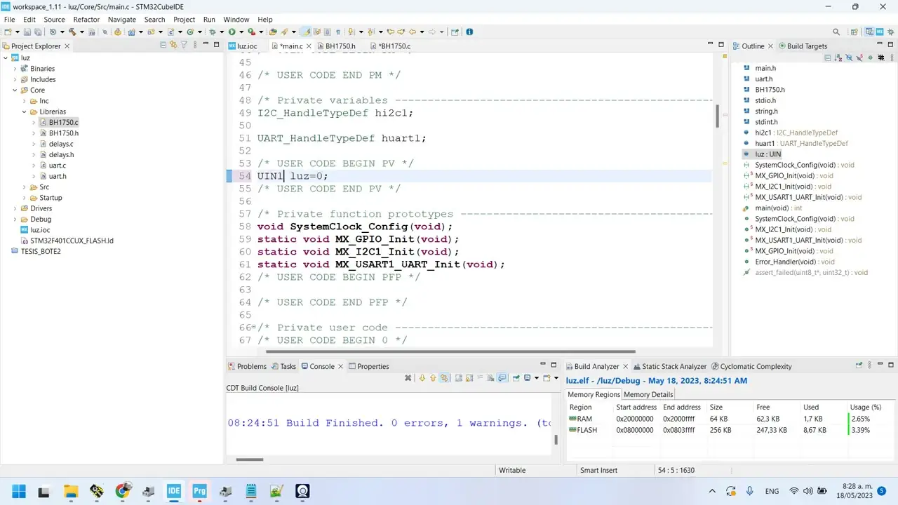
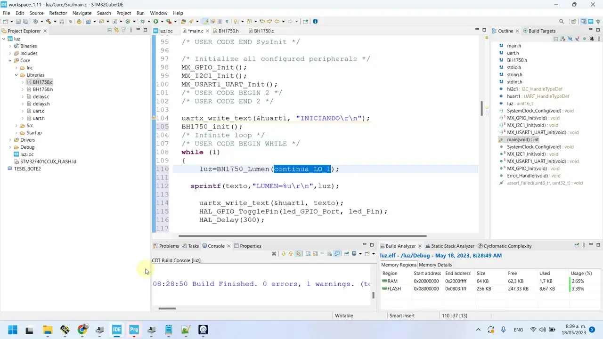
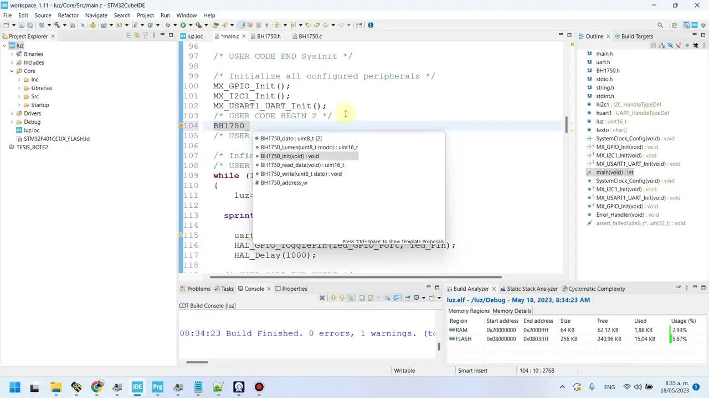
Programa con STM32CubeProgrammer (archivo .elf), abre el puerto en Hercules y resetea la placa. Con la luz del cuarto marca unas decenas; al acercar una lámpara sube a miles.
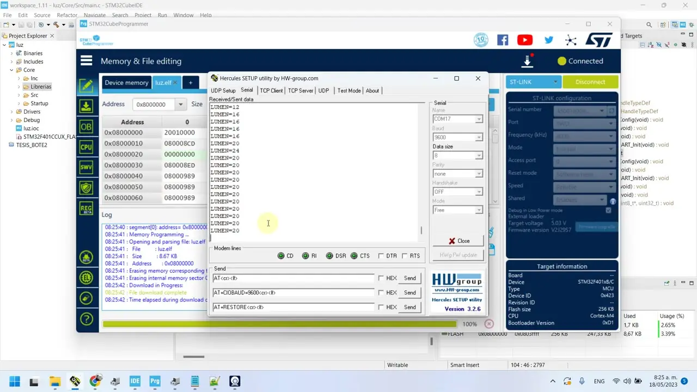